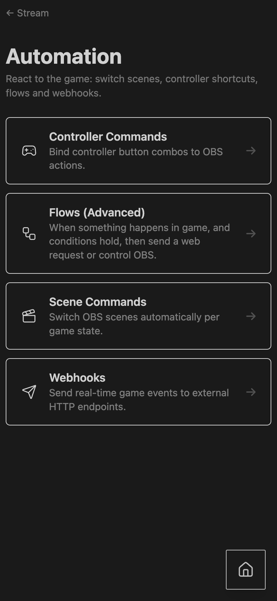

Remote control
Scenes and overlays from your phone.


What it gives you
Run your stream without touching the keyboard during a match:
- Scene Commands — OBS follows the game: your Game scene when a game starts, a big camera scene when it ends, the striking scene between games.
- Controller Commands — hold a combo on your controller to save a replay clip or toggle your camera.
- The Dashboard on your phone — switch scenes, show or hide sources, set volume and save replays from anywhere in the room.

All of this needs OBS connected — see Integrate with OBS.
Free and open source — Windows, macOS and Linux. Step-by-step guides are built into the app, or ask the AI assistant.